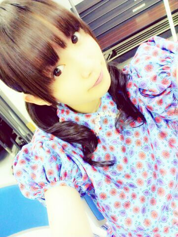
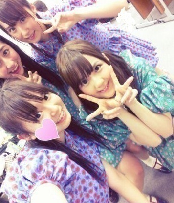

マンモスフリーマーケット
ありがとうございました！
寒かったのにー雨ふってたのにー
めちゃたくさんの方がステージに
遊びにきてくださって
気持ちよかったです(´;ω;`)
衣装解禁ー♪

ブルー、パープル、グリーンの
3バージョンあるんですねー
スカートふりふり(*^^*)パフスリーブ
かわゆいでっしょー＊？
なかなかお気に入りよー
アンダー曲のタイトルは
春のメロディー。
曲調はぐるカーみたいな
ミディアムテンポなかんじで
ちゃららんちゃららんってかんじ！
乃木どこでも歌収録したので
是非チェックしてみてね◎

そいで今日は
みんないつもと違う髪してたので
ひめたも便乗しまして笑
久々のハーフアップきてあ＼(^^)／
きゃーるんるんごめす(´・ω・｀)
しかもハーフアップ
髪まとめてない側で撮ってるから
伝わらん！どゆことー
ハーフアップいいね＊
セトリっちさーん
走れ！bicycle
ぐるぐるカーテン
狼に口笛を
左胸の勇気
春のメロディー
会いたかったかもしれない
おいでシャンプー
明日も頑張ります。
似顔絵会とお渡し会頑張ります。
いこまっち(生駒里奈chan)
よろしくね(｀・ω・´)
えいえいおー
(＊´・ω・＊)ひめたん